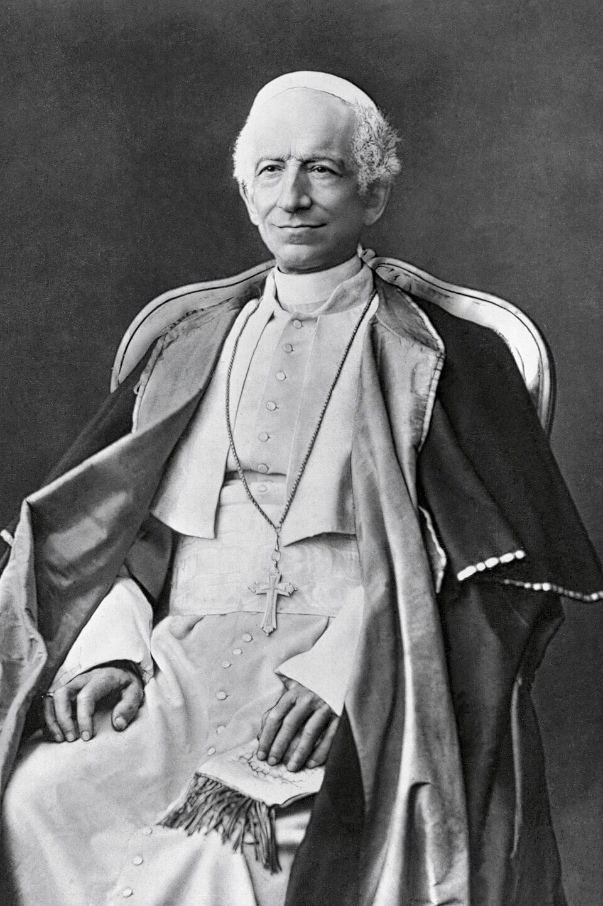

Czy papież, który kieruje instytucją religijną tak starą jak Kościół katolicki, może zdecydować o losie sztucznej inteligencji? To prawda, Kościół katolicki zawsze był uważany za instytucję konserwatywną, ale także nieustannie starał się odnieść do wydarzeń, którymi żyje świat. Tak było w przypadku Leona XIII. Jego encyklika Rerum novarum była reakcją na nową rzeczywistość, w której ruchy socjalistyczne zdobywały coraz większy wpływ na masy robotnicze pozostawione samym sobie przez radykalną gospodarkę liberalną. Papież Leon XIII. miał odwagę zaproponować trzecią drogę. Dzisiaj tematem numer jeden nie jest socjalizm, ale sztuczna inteligencja, dlatego Watykan wypowiada się także na ten temat. W tym wpisie pokażę, jak cybernetyka pozwala zrozumieć decyzje papieża.
Z lotu ptaka
Papież działa jak nawigator okrętu, który musi reagować na zmieniające się warunki na morzu. Jeśli zauważy zmianę wiatru, niebezpieczną falę, musi z jednej strony dostosować odpowiednio pozycję łodzi, aby jej nie wywrócić, ale z drugiej strony nie minąć portu docelowego. Było tak w XIX wieku.
W odpowiedzi na fatalną sytuację robotników pojawiły się ruchy socjalistyczne . Leon XIII z jednej strony widział zło marksistów, ale także widział tragiczne położenie robotników, których trudna sytuacja była efektem radykalnie liberalnego podejścia do gospodarki. Patrząc na kierunek wiatru historii papież musiał zatem przekręcić ster, aby móc płynąć w tym samym kierunku. Podobne wyzwanie stoi teraz przed jego następcą, Papieżem Leonem XIV. Obecnie takim wyzwaniem jest sztuczna inteligencja (SI).
SI jest używane prawie wszędzie od szkoły po wojsko, a nawet w liturgii, tempo zmian jest zawrotne. Znów istnieją co najmniej dwie opcje, odrzucić SI lub przyjąć je bez zastrzeżeń. To jest zbyt oczywiste.
Radykalny wybór każdej z tych opcji przypomina gwałtowny ruch sterem, który może skończyć się źle dla załogi, dla łodzi i dla podróży. W tym sensie papież musi być sprawnym sternikiem i nawigatorem.
Tło historyczne
Roztropność nakazuje uczyć się z przeszłych doświadczeń, aby rozpoznać, co się powtarza, a co jest nowe. Widać wyraźnie, że występuje tu pewien podobny schemat jak w XIX w. Stanowi to wskazówkę dla poszukiwania rozwiązania. Pod koniec XIX wieku Kościół zmierzył się z socjalizmem i pierwszą rewolucją przemysłową, a raczej jej negatywnymi konsekwencjami. Tym zmianom towarzyszyły podziały w Kościele pomiędzy frakcjami konserwatywnymi i liberalnymi w ramach walki z modernizmem. Przykładem ofiary tej walki był John Henry Newman. W Niemczech toczyła się walka kulturowa pruskiego rządu z katolicyzmem. Encyklika Rerum novarum była owocem dłuższego projektu. W 1950 roku Carlo Maria Curci założył czasopismo La Civiltà Cattolica1, które miało na celu przedstawienie na najwyższym poziomie intelektualnym punktu widzenia Kościoła w kwestiach religijnych i politycznych (Hales 1962), wobec ataków propagandowych i fizycznych na papiestwo. W założeniu tego pisma brali udział dwaj inni Jezuici Matteo Liberatore SJ (1810-1892) oraz Luigi Taparelli SJ (1793-1862). Ich pisma przygotowały grunt pod encyklikę Rerum novarum, która została przygotowana przez Liberatore i dominkiańskiego kardynała Tommaso Maria Zigliara.

Leon XIII rozpoczął dialog z kulturą, wyznaczając nowy kurs. Wybrał imię Leon, ze względu na pojednawcze podejście wobec świeckich rządów poprzedniego papieża o tym imieniu. Obrany kurs nie był tak ostry jak jego poprzednika. W encyklice także widać ten pojednawczy charakter. Nie opowiedział się za liberalizmem lub marksizmem, ale zaproponował nowe rozwiązanie. W ten sposób był w stanie przeprowadzić Kościół po tych wzburzonych wodach.
Leon XIII. w wymiarze polityki kościelnej zrobił to, co robi każdy żeglarz: patrzy na morze i wiatr i koryguje ruchem steru ustawienie statku, aby mimo zmiany otoczenia i zmianie położenia okrętu zachować ten sam kurs. W sterowaniu statkiem pozycja steru jest nieustannie dostosowywana do efektu jaki wywiera na okręt, tworząc sprzężenie, dzięki któremu kurs może być zachowany w zmieniającym się otoczeniu, reagując na zaburzenia ze strony wiatru i fal.(Gage 2007)
To co musi zrobić zatem papież, to jak sternik obserwować gdzie jesteśmy, jakie jest otoczenie, jak może wpływać na statek, aby utrzymać kurs, a ostatecznie dotrzeć do celu, do którego zmierza Kościół. Kluczowe jest nie tylko wydawanie rozkazu, ale także mówienie tak, aby ludzie słuchali, obserwacja otoczenia i zachowania statku, czyli sprzężenie zwrotne. Widać zatem wyraźnie analogię między sterowaniem statkiem i polityką Leona XIII. To także jest wniosek cybernetyczny. Pewne problemy mimo że dotyczą różnych sytuacji, czy to statku, czy społeczeństwa, czy algorytmu, wykazują pewne podobieństwa. Patrzymy na cel, wydajemy polecenie, sprawdzamy reakcje i odpowiednio korygujemy kurs.
Paralele odnośnie nowej etyki AI
Dzisiejsza sytuacja nie jest wyjątkiem. Nic nie zrobimy z tym, że rozpętała się cyfrowa burza. Prawdopodobnie zakaz SI mógłby nastąpić tylko po jakiejś globalnej katastrofie w stylu Hiroszimy. Pytanie jak podejść do tych nowych warunków “na morzu”. Co może zrobić Kościół? W porównaniu do XIX wieku teraz tempo rozwoju jest szalone, informacje które trzeba wziąć pod uwagę olbrzymie. W skrócie otoczenie stało się niezwykle złożone. Widać jednak, że Kościół nie zamierza stać bezczynnie i patrzeć na nadciągające tsunami, ale wydaje konkretne dokumenty na temat SI i nowych technologii, które wyznaczają punkty odniesienia pozwalające trzeźwo spojrzeć na toczące się zmiany. Obecna transformacja społeczna została wyraźnie określona przez Klausa Schwaba, jako kolejna rewolucja przemysłowa, analogicznie do rewolucji przemysłowej w XIX. wieku. Jak za czasów Marksa, także dzisiaj sugeruje się, że nauka pozwoli rzucić wyzwanie Bogu. (Harari 2017) Zatem wyzwania, przed którymi stał Leon XIII. i Leon XIV. są bardzo podobne.
.jpg)
Co to pokazuje?
To pokazuje, po pierwsze zdolność Kościoła do adaptacji do zmieniających się warunków. Chociaż często są to reakcje opóźnione, to jednak takie opóźnienie pozwala adekwatnie odnieść się do zmiany i zaproponować rozwiązanie. Powolność może być podyktowana tym, że kościół to nie motorówka, ale transoceaniczny okręt. Tak jak wcześniej, to do Papieża należy funkcja sternika, który musi nawigować stosując zmiany, aby zachować niezmienność. Podobnie jak żyroskop, który dzięki byciu ciągle w ruchu zachowuje niezwykłą stabilność. Ta reguła dotyczy nie tylko Kościoła, ale także innych instytucji, a nawet wszystkich organizmów żywych: aby przetrwać i pozostać sobą trzeba się zmieniać. To, co Kościół do tej pory pokazywał, to zadziwiająca zdolność do zachowania tożsamości pomimo zmiany warunków otoczenia.
Podsumowanie
W tym krótkim wpisie, zatem mogliśmy spojrzeć na Papieża nie tylko jak na kapłana, głowę państwa, ale także na jego rolę jako sternika, który ma zadanie zachowanie wyznaczonego przez Chrystusa kursu wśród zmiennych wód historii. Pokazane zostały pewne analogie z poprzednimi historycznymi wyzwaniami. Te analogie pozwalają zrozumieć adaptację instytucjonalną, ale też stanowi przestrogę dla dalszych decyzji.
Papież jest sternikiem, a doświadczenie Kościoła może wskazać na metody zaradcze dla dzisiejszej sytuacji, która zawiera elementy nowe i stare. Z drugiej strony, także rozwój nauki o kierowaniu instytucjami może wskazać na rozwiązania korzystne dla kościoła. Odpowiedź na pytanie, co to oznacza w szczególności oraz jakie narzędzia dostarcza współczesna nauka dla poprawy komunikacji i lepszego orientowania się w otaczającym środowisku, będzie rolą tego bloga.
Jak myślicie, jak wygląda obecna sytuacja balansowania pomiędzy tożsamością a adaptacją w Kościele, jakie jeszcze analogie widzicie pomiędzy Leonem XIII. a Leonem XIV.?
Wnioski
- Zadanie Papieża może być postrzegane jako problem sterowniczy.
- Takie podejście do urzędu papiestwa jest w ciągłości z całą tradycją kościelną
- Przypomnienie tej analogii pozwala posłużyć się koncepcjami cybernetycznymi do analizy współczesnych nacisków na adaptację.
- Stanowi punkt wyjścia do pytania, co te ramy teoretyczne pokazują o współczesnych wyzwaniach.
- Author
-
© 2025 Ks. Tomasz Włodarczyk. All rights reserved.
-
: Obraz Jan Porcellis, Public domain, via Wikimedia Commons
Bibliografia
Przypisy
“Pur essendo una rivista di cultura generale, La Civiltà Cattolica non è un periodico «popolare», bensì di alta divulgazione. Gli argomenti vi sono trattati in modo che possano essere compresi anche da persone non specializzate in quella materia; ma la trattazione è, per quanto possibile, scientificamente rigorosa e seriamente approfondita.” (pl. “Mimo że La Civiltà Cattolica jest czasopismem poświęconym kulturze ogólnej, nie jest to magazyn „popularny”, lecz o wysokim poziomie merytorycznym. Tematy są w nim poruszane w sposób zrozumiały również dla osób niebędących specjalistami w danej dziedzinie, ale omówienie jest, w miarę możliwości, naukowo rygorystyczne i poważnie pogłębione.”) Oficjalna strona Zarchiwizowane 28 września 2007 na Wayback Machine.↩︎

{kind=link}